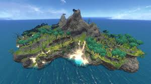
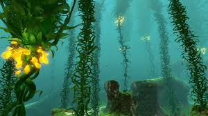
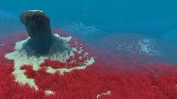
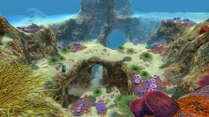

Die schwimmende Insel
The Floating Island oder die schwimmende Insel ist ein einmaliges Biom, das sich im Südwesten der Aurora befindet. Es ist eine der großen Landmassen, die komplett von riesigen Schwebern an der Wasseroberfläche gehalten wird, die unterhalb der Insel wachsen. Momentan können Signale verwendet werden, um die Insel zu finden. Das Signal wird die Entfernung anzeigen und anzeigen das eine Landmasse entdeckt wurde.
Beschreibung
Das Floating Island ist komplett erforschbar, hat eine große Vielfalt an bunter, dekorativer, landgebundener Flora, die einen Großteil der Landfläche der Insel bedecken. Das Land kann von seinen verschiedenen Stränden oder dem Unterwassereingang in seinem Zentrum betreten werden.

Lithiumkristalle zusammen mit Salzvorkommen können
verteilt über die Insel gefunden werden.
Es gibt auch Verlassene Seebasen die im Zentrum der Insel und an den Bergspitzen von Floating Island liegen. Um die zwei verlassenen Seebasen an der Bergspitze zu erreichen folge der rechten Abzweigung des Trampelpfades in der Nähe des Strandes. Der Pfad wird sich nochmals vor einen Brücke teilen, von welchem jeder der beiden Pfade zu einer der Bergspitzen führt. Um die zentrale Seebasis zu erreichen, nimmt man die rechte Abzweigung in der Nähe des Strands und folgt ihr um die Ecke der Insel. Es ist auch einfach möglich von einem der beiden Bergspitzen zur zentralen Seebasis abzusteigen.
Der Seetangwald
Das Biom "Kelp Forest" liegt in der Nähe des Startbereichs und ist oft das nächste Biom was man ansteuert. Dieses Gebiet beinhaltet schon etwas mehr Gefahren, denn hier leben die Arten Pirscher und Bluter, die den Spieler ganz schön auf Trab halten.

Wie schon der Name verrät, beherbergt dieses Biom einen großen Wald aus seetangartigen Pflanzen, die knapp bis zu Wasseroberfläche wachsen. Die Blätter und die gelbleuchten Samen sind wichtige Rohstoffe und werden für den späteren Spielverlauf gebraucht.
Allgemein ist dieses Gebiet recht grünlich gehalten. Das Wasser ist trüb und lässt weniger Licht zum Boden. Überall wächst grünliches Gras und Moosflächen überziehen Grund oder Felsstrukturen.
Höhlensysteme und Spalten
In diesem Biom gibt es einige enge aber auch offene Höhlengänge die oft in große, tiefe und weitläuftige Spalten führen. In den Spalten und im Bereich von Höhleneingängen lauern ab und zu die Tierarten Mesmar, Pirscher und Bluter. In den Höhlengängen selbst hängen schon mal Stecher von den Decken, die nicht nur für Tiere eine Gefahr darstellen.
Die grasigen Plateaus
Die Grassy Plateaus sind eine großflächige Ebene die eine große Diversität an Lebensformen enhält. Es ist eines der ersten Biome die der Spieler in Subnautica antrifft.
Beschreibung
Die Grassy Plateaus zeichnen die säulenartigen Strukturen aus, die scheinbar von der Erosion des Meerwassers erstellt worden sind, weichen Meeresebenen und sandigem Gebiet das fast komplett mit Blutgras bedeckt sind aus. Dies verleiht den Grassy Plateaus auch ihren bestimmenden Namen.

Dem Spieler wird hier eine Fülle von Resourcen angeboten. Neben Kreatureneiern und anderen Rohstoffen, können auch Kalksteinablagerungen und Sandsteinablagerungen gefunden werden, die an Felsen oder versteckt zwischen den Blutgras-Flecken sind. Dieses Biom bewohnt auch der momentan größte Pflanzenfresser im Spiel, der Riffrücken. Während der Erkundung der Grassy Plateaus wird neuen Spielern empfohlen in der Umgebung sorgfältig Ausschau nach Gruppen von Beissern Ausschau zu halten, ebenso Abstand von verdächtigen Sandwolken zu halten, da sich in diesen die Sandhaie verstecken die in diesem Biom reichlich vorhanden sind. Tigerpflanzen, eine andere Gefahr, befindet sich ebenso in diesem Biom.
Die sicheren Untiefen
Das Biom „Safe Shallows“ (in deutsch "Sichere Untiefen") ist das erste Gebiet, das der Spieler erforschen kann. In diesem Gebiet befindet sich die Absturzstelle von Rettungskapsel 5, welche westlich der Aurora abgestürzt ist.

Beschreibung
Bei diesem Gebiet handelt es sich um einen flachen Teil des Ozeans der von auslandenden Korallenriffen überzogen ist. Unterhalb des Gebiets befindet sich ein kleines Kavernensystem. Obwohl hier keine großen Raubtiere gefunden werden können, besteht Gefahr durch Gasopoden und Kracherfische. Zudem ist es möglich, wenn gleich selten, dass sich Sandhaie oder Pirscher auf Nahrungssuche in dieses Gebiet verirren.
Wie der Name impliziert, ist Safe shallows ein recht sicherer Ort, der meist nur knapp unter der Wasseroberfläche liegt. Aufgrund der reichen Flora und Fauna lässt sich in diesem Biom das Nötigste zum Überleben finden.